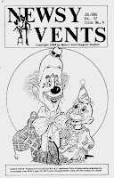

Rewarding Testimonials
8/22/2011
By Chuck Meyer
A testimonial can really make you feel good about your performance. Getting as many testimonials as possible is also important from a business aspect. The accolades can be used when mailing out information about your show. They can also be used on flyers and brochures.
Testimonial letters will be few and far between unless you go after them. There are several ways to ask for testimonial letters.
Some performers carry self-addressed stamped envelopes (SASE) to the show to give to the client or anyone else who praises the show. The performer asks for the person to put their comments in writing.
I like to send a thank you letter to the client immediately after the show. To be effective, the client must receive this letter within 3-5 days following the show. In addition to thanking them for inviting me, I write. "If it isn't too much trouble, I'd appreciate a letter with your comments and reactions to my performance. Enclosed is a SASE. In this way I can keep my act fresh and entertaining."
There are three parts to a show that give me a genuine warm feeling. 1) Applause and laughter. 2) Getting paid (or the good feeling generated by a donated show). 3) Getting a testimonial sometime after the show.
* * * * *
From Mr. D: This excerpt is from an article by the same title in the Jul/Aug 1989 issue of Newsy Vents. One set of four 1989 N/V back issues is being awarded today to Tom Rogers.
A testimonial can really make you feel good about your performance. Getting as many testimonials as possible is also important from a business aspect. The accolades can be used when mailing out information about your show. They can also be used on flyers and brochures.
Testimonial letters will be few and far between unless you go after them. There are several ways to ask for testimonial letters.
Some performers carry self-addressed stamped envelopes (SASE) to the show to give to the client or anyone else who praises the show. The performer asks for the person to put their comments in writing.
I like to send a thank you letter to the client immediately after the show. To be effective, the client must receive this letter within 3-5 days following the show. In addition to thanking them for inviting me, I write. "If it isn't too much trouble, I'd appreciate a letter with your comments and reactions to my performance. Enclosed is a SASE. In this way I can keep my act fresh and entertaining."
{kind=link}

There are three parts to a show that give me a genuine warm feeling. 1) Applause and laughter. 2) Getting paid (or the good feeling generated by a donated show). 3) Getting a testimonial sometime after the show.
* * * * *
From Mr. D: This excerpt is from an article by the same title in the Jul/Aug 1989 issue of Newsy Vents. One set of four 1989 N/V back issues is being awarded today to Tom Rogers.